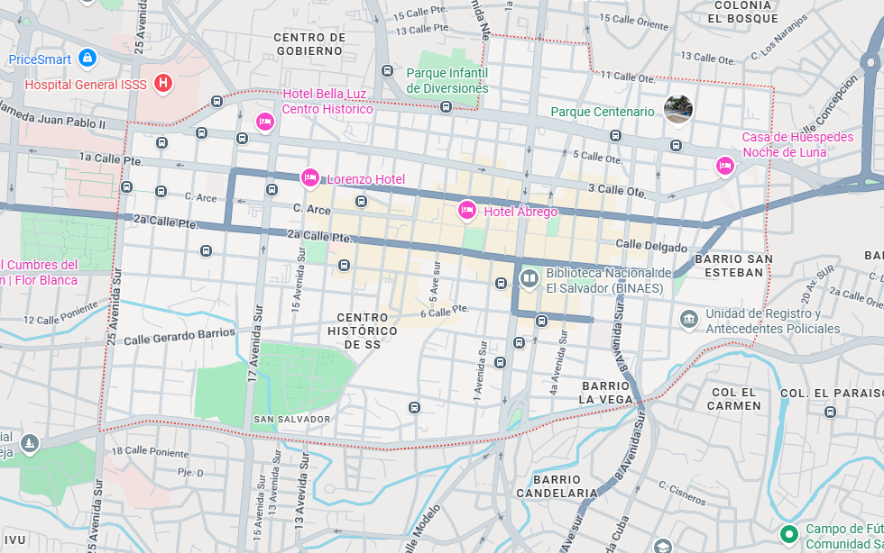

¿Por qué recorrerlo en dos ruedas?
- Libertad absoluta: Olvídate del tráfico y de buscar parqueo. En bici te mueves a tu propio ritmo, descubriendo pasajes ocultos, plazas vibrantes y la arquitectura icónica de la zona.
- Comunidad y vibra nocturna: Los recorridos en bici por el centro se han convertido en un movimiento enorme. Unirte a las pedaleadas nocturnas es la combinación perfecta de deporte, cultura y buen ambiente.
- La recompensa final: No hay mejor cierre para una buena rodada que estacionar la bici y disfrutar de un café de especialidad en las terrazas locales, unos antojos típicos o una plática con amigos frente a los edificios iluminados.